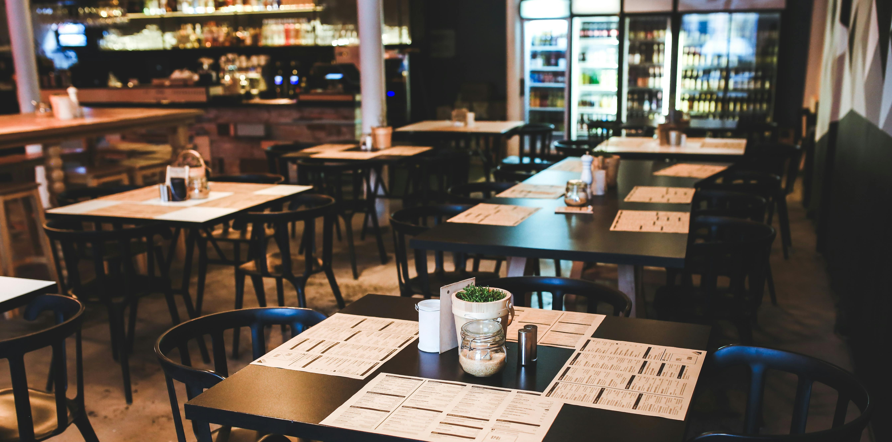
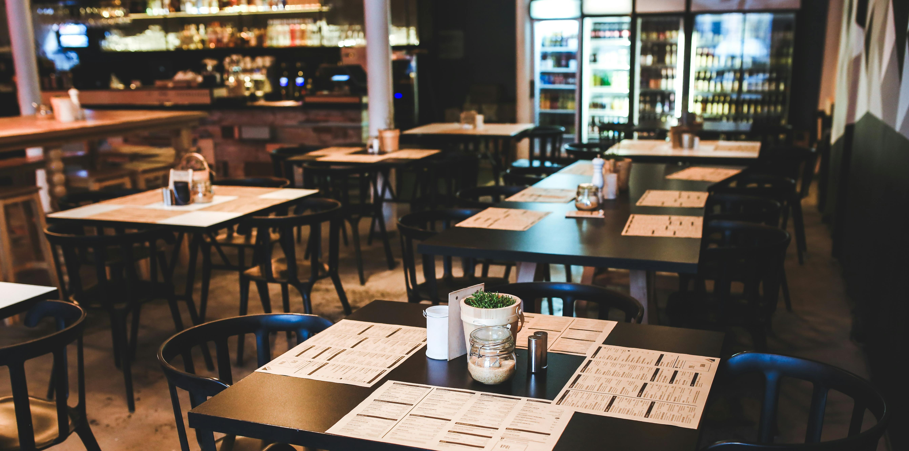

Tu rincón culinario: Descubre las mejores recetas en un solo lugar
¿Buscas inspiración para sorprender en la cocina? Nuestra página web de recetas es el espacio perfecto para los amantes de la gastronomía, desde principiantes hasta chefs experimentados. Aquí encontrarás una amplia variedad de platos: desde recetas tradicionales hasta opciones innovadoras para cada ocasión. Explora categorías como entrantes, platos principales, postres y opciones saludables, todas explicadas paso a paso y con consejos prácticos. Además, podrás personalizar tu búsqueda según tus preferencias, ya sea por tipo de dieta, ingredientes o nivel de dificultad. Déjate llevar por el sabor, comparte tus creaciones y conviértete en el protagonista de tu cocina. ¡Porque cada receta es una historia esperando ser contada!
 
